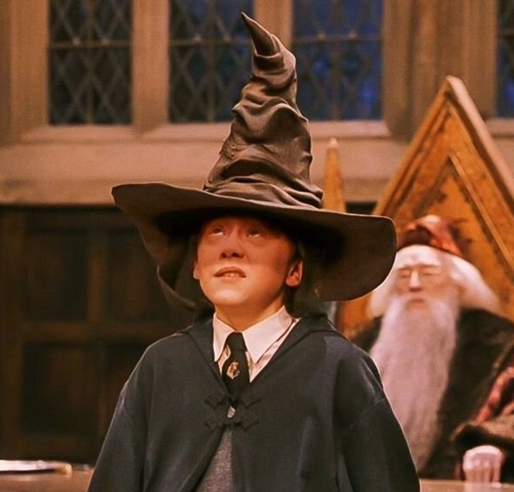
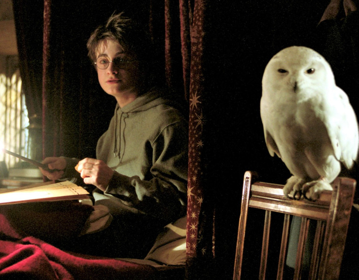
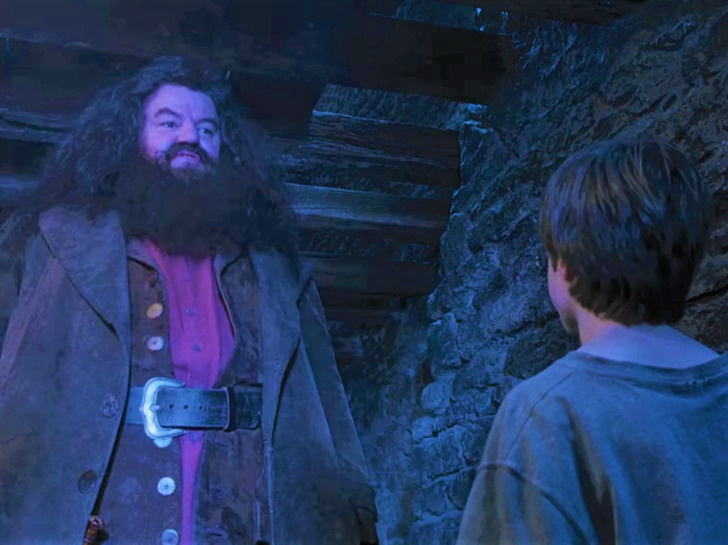
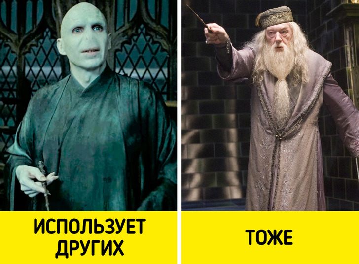
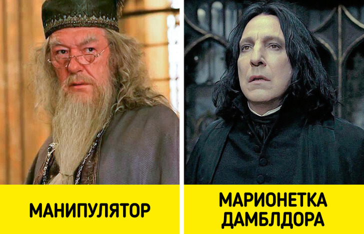
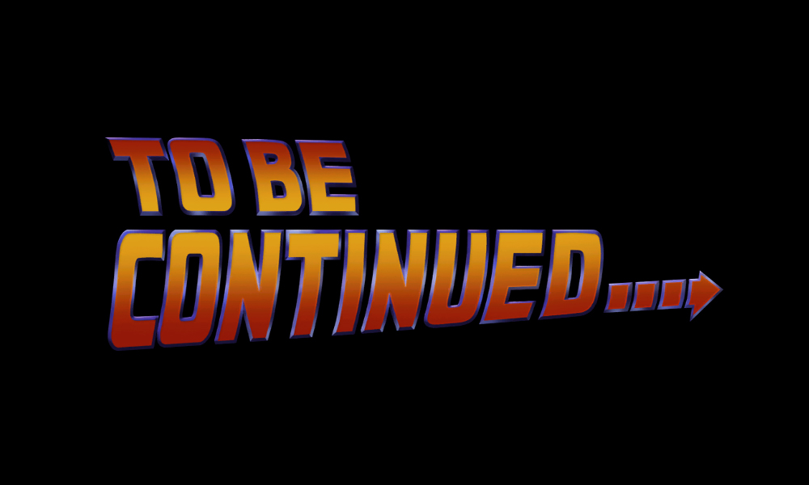

16 деталей из «Гарри Поттера», которые в детстве мы все дружно проворонили, а повзрослев, раскусили на раз-два
В детстве мир волшебства, в котором очутился Гарри Поттер, очаровал нас ничуть не меньше, чем самого героя. Словно завороженные, мы наблюдали за тем, как строгий Северус Снейп учит детей варить зелье, а чудная профессор Трелони предсказывает будущее. И конечно, всегда переживали и болели за золотое трио, неизменно спасавшее мир от зла. Но восторженность юных зрителей приводила к тому, что некоторые важные детали попросту упускались из виду. Мы в ADME решили взглянуть на все происходившее в поттериане свежим взглядом и обнаружили то, что в детстве было непонятно. Этот текст был шрифтом Larsseit
Про заразные болезни в Хогвартсе явно не слышали
Из года в год сотни учеников надевают на голову распределяющую шляпу и затаив дыхание ждут, на какой факультет попадут. И фанаты заметили, что никто в школе ни разу не заразился педикулезом. Хотя в жизни вероятность того, что кто-то из учащихся мог подхватить вшей, очень велика. Шляпу не дезинфицировали после каждого студента и вообще вряд ли когда-то стирали. Этот текст был шрифтом Lato
Совы могут невольно сдать с потрохами любого, кто вынужден скрываться
Волшебники отправляют друг другу письма и посылки при помощи сов. Так вот, поклонники поттерианы заметили одну любопытную деталь: теоретически герои, которые хотят найти кого-то из своих врагов (например, того же Гарри), могут просто следовать за совой, так как каждая из них знает, куда надо доставить письмо, даже если имя и адрес получателя ей неизвестны. Этот текст был стандартным шрифтом для этой страницы - Roboto
Хагрид просто-напросто похитил Гарри из дома опекунов
Конечно, смотря на бедного Гарри, живущего под гнетом отвратительных тети и дяди, мы воспринимаем Хагрида, приехавшего за мальчиком, как спасителя. Но если взглянуть на ситуацию со стороны Дурслей, то великан выглядит обыкновенным преступником.Этот текст был стандартным шрифтом для этой страницы - Roboto
Хагрид врывается в чужой дом посреди ночи и забирает Гарри без разрешения его опекунов — то есть, по сути, крадет ребенка. Странно, что в мире, где такое воспринимается нормально, без согласия родителей не пускают в Хогсмид за сладостями. Этот текст был шрифтом Lato с жирным начертанием
Дамблдор циничен и не щадит чувства других. И этим похож на Волан-де-Морта
Многие вслед за Гарри боготворили прославленного директора Хогвартса. До того момента, когда стало понятно: Дамблдор с самого начала знал, что мальчик обречен на гибель от руки Темного Лорда. Гарри был просто марионеткой Альбуса, нужной для борьбы с Волан-де-Мортом. Этот текст был стандартным шрифтом для этой страницы - Roboto
В этой борьбе Дамблдор использовал не только Поттера, но и Снейпа. Директор играл на чувствах Северуса к матери Гарри Лили. Желание Снейпа исполнить долг перед любимой женщиной было лишь удобным для Альбуса поводом заставить профессора защищать Гарри. А ведь этот мальчик так напоминал Северусу ненавистного соперника — Джеймса Поттера. Этот текст был стандартным шрифтом для этой страницы - Roboto
Хагрид врывается в чужой дом посреди ночи и забирает Гарри без разрешения его опекунов — то есть, по сути, крадет ребенка. Странно, что в мире, где такое воспринимается нормально, без согласия родителей не пускают в Хогсмид за сладостями. Этот текст был шрифтом Lato с особо жирным начертанием
Пожалуй на этом и закончим, дабы не отнимать много времени :)
